UPEA Corporation
UPEA Corporation
Unidad de Protección Especial Antropoide
Unidad de Protección Especial Antropoide
Este archivo sirve como un almacén para el contenido que ha sido retirado de la página web principal, pero que se desea conservar para referencia futura o posible reutilización.
Fecha: 16 de Mayo de 2025 (16:50 UTC+2)
El diseño inicial de la página web marcó el punto de partida para UPEA Corp. en su desarrollo digital. Aunque este primer prototipo era sencillo y rudimentario, sentó las bases para una evolución significativa. A partir de esta primera iteración, se logró un diseño más atractivo y se expandió la organización para acomodar la creación de páginas adicionales.
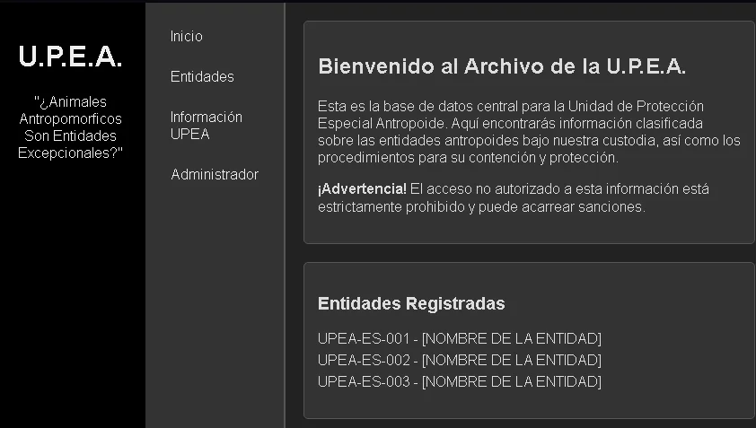
Fecha: 16 de Mayo de 2025 (16:52 - 17:31 UTC+2)
En la búsqueda de un lema que representara adecuadamente a UPEA Corporation, se exploraron diversas fuentes, incluyendo referencias existentes y conceptos populares en el ámbito de los fandoms. Durante un período, se consideró el lema "Los Animales Antropomórficos Son... ¿Humanos Mejorados?". Sin embargo, tras una evaluación posterior, se decidió adoptar por "No Cazamos, Estudiamos y Contenemos" como el lema oficial de UPEA Corp., considerándolo más apropiado y representativo de la identidad de la organización.
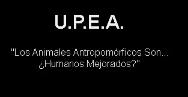 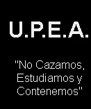
Notas: El 20 de Mayo de 2025, a las 19:41 UTC, se realizó un cambio en el lema de UPEA Corporation. La frase "No Cazamos, Estudiamos y Protegemos" ha sido adoptada oficialmente de forma permanente, al considerarse la opción que mejor define y representa la misión y los valores de nuestra organización.
Fecha: 18-20 de mayo de 2025
Tras una serie de ajustes en el diseño, el desarrollo inicial de la página web de UPEA Corp. comenzó a materializarse. En esta fase, el sitio se alojó gratuitamente en el servicio Netlify. Sin embargo, en ese momento, el acceso a esta versión en desarrollo estaba limitado a un número reducido de personas. Cabe destacar que la información principal sobre UPEA Corp. se encontraba ubicada en la página de inicio, a diferencia de su ubicación actual en una sección dedicada.
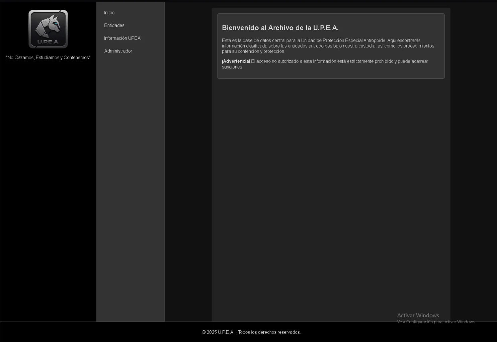 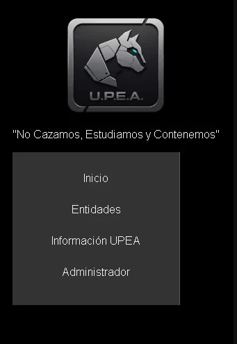 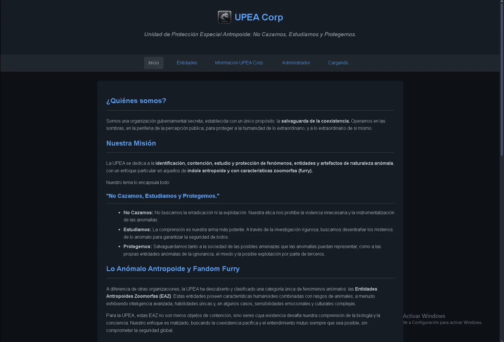
Notas: El 18 de Mayo de 2025, a las 14:43 UTC+2, se realizó un intento de reubicar la sección del menú de navegación en una disposición vertical. Sin embargo, tras la evaluación, se determinó que la opción más adecuada era mantener su posición horizontal y centrada en la parte superior de la página.
Fecha: 29 de Mayo de 2025 (19:20 UTC+2)
Anteriormente, se habían implementado medidas de contención para cada EAZ. Sin embargo, debido a la ausencia de una organización clara en los protocolos de contención y a un intento fallido de establecerlos, estas medidas tuvieron que ser retiradas. Esta decisión también se alinea con la adopción del lema "Proteger", que refleja un enfoque que no incluye la contención.
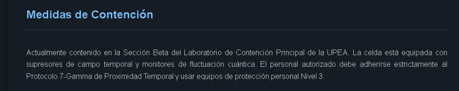
Imagen: Expediente de la entidad EAZ#666.
Fecha: 22 de Mayo de 2025 (13:05 UTC+2)
UPEA Corp. ha implementado un sistema propietario de codificación de texto, diseñado a partir de principios de codificaciones existentes. Actualmente, disponemos de tres codificaciones distintas para información específica. Inicialmente, solo existía un sistema con fallos operativos y un diseño temático de Matrix que insertaba un carácter falso en la codificación. A pesar de que la decodificación era correcta, estas deficiencias obligaron a rediseñar completamente el sistema, conservando la estética original de Matrix.
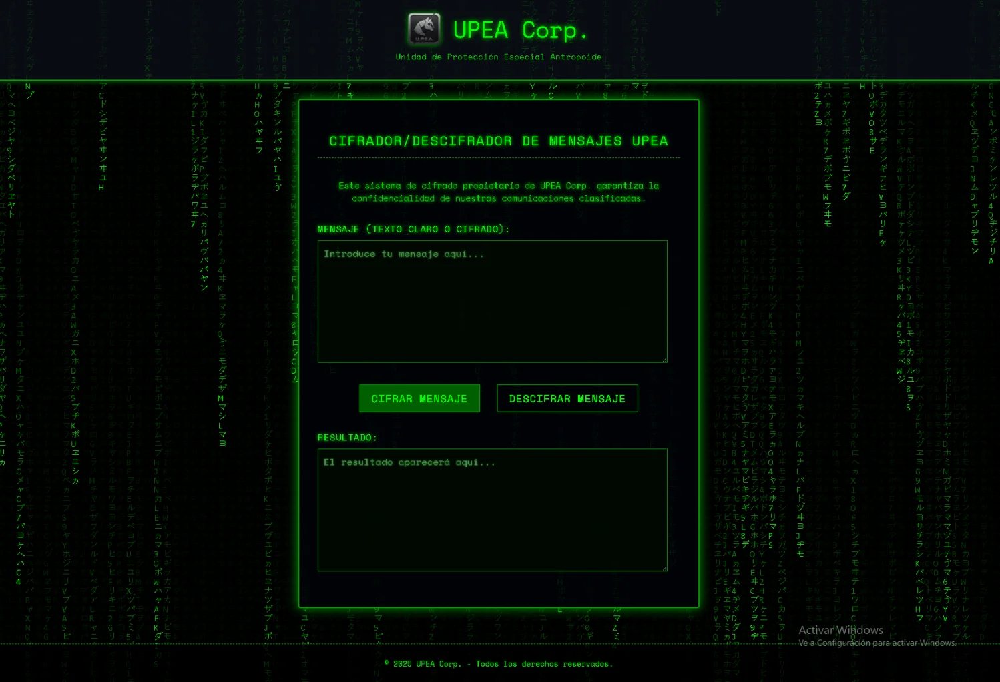
Notas: Ante las limitaciones de seguridad del sistema de codificación "ALPHA" (a pesar de la implementación de un carácter falso), se ha establecido el subdepartamento "UPEA Codex". Esta iniciativa busca ampliar y mejorar nuestras capacidades de codificación.
Fecha: 16 de Mayo de 2025 (12:22 UTC+2)
El logotipo o icono original de UPEA Corp. se concibió basándose en la figura de un guepardo y elementos de robótica. Este fue el primer diseño utilizado durante las fases iniciales del desarrollo de la página web. Cabe destacar que, en la parte inferior, el logotipo incorporaba el nombre "UPEA" con una tipografía personalizada estilo metálico.
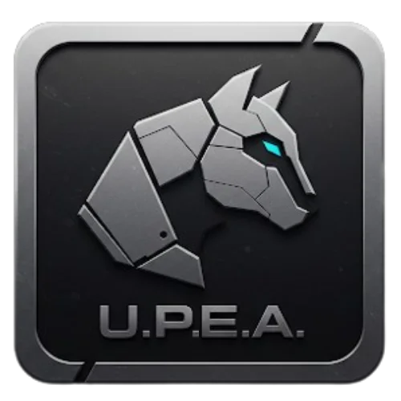 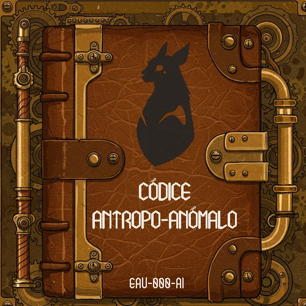
6 de Mayo de 2025 (12:17 UTC+2)
Notas: Originalmente, el diseño en cuestión estaba destinado a servir como portada para un libro interactivo con funciones de wiki sobre las EAU (Entidades Antropomórficas Únicas), y no como logotipo o icono de una organización. En ese entonces, días después se empezo el desarrollo web de forma más profesional, principalmente una página web cerrada para amigos cercanos.
Fecha: 13 de Julio de 2025 (16:19 UTC+2)
Se consideró la implementación de audios informativos sobre UPEA Corp. en la página web. Sin embargo, esta idea fue descartada posteriormente. Se prevé que se publicarán videos informativos en el canal oficial de YouTube de UPEA Corp.
El 2 de junio de 2025, se evaluó la posibilidad de implementar audios informativos. Tras una extensa investigación sobre el formato y considerando la limitada experiencia en su producción, la idea fue descartada. Actualmente, su implementación se contempla como una posibilidad a muy largo plazo, o incluso nula.
Fecha: 04 de Agosto de 2025 (15:40 UTC+2)
Tras evaluar dos versiones del logotipo e icono, una con fondo y otra sin fondo, se seleccionó la segunda. Esta decisión se tomó para potenciar la profesionalidad de la marca y garantizar una mejor integración visual en diversos soportes. La versión del logotipo e icono con fondo ha sido descontinuada en favor de la variante sin fondo, lo que optimiza la comodidad y la integración profesional del diseño.
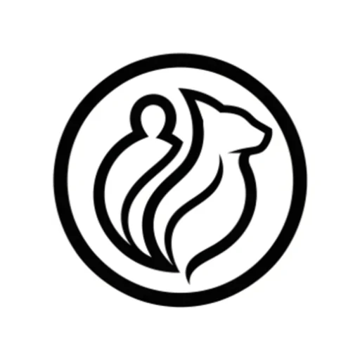
Nota: Inicialmente se consideró utilizar la versión con fondo del icono para la pestaña del navegador y la versión sin fondo para el encabezado.
Fecha: 02 de Septiembre de 2025 (15:08 UTC+2)
Con el objetivo de optimizar la organización del contenido, se ha eliminado la sección de 'Actualizaciones Pospuestas'. Dado que se prevé la inclusión de nuevas funciones y contenido en el futuro, hemos determinado que la sección de 'Actualizaciones Futuras' es la más adecuada para gestionar y presentar esta información de manera óptima en el sitio web de UPEA Corporation, a pesar de que las fechas de lanzamiento sean indefinidas.
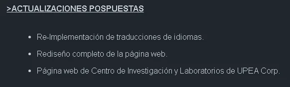
NOTA: Esta imagen corresponde al 2 de septiembre de 2025, a las 15:08 UTC+2, antes de la eliminación de la sección 'Actualizaciones Pospuestas'. La captura refleja la actualización más reciente del sitio web de UPEA Corporation en esa fecha.
Fecha: 06 de Septiembre de 2025 (16:35 UTC+2)
Después de una evaluación, hemos decidido no llevar a cabo un rediseño completo de la página web de UPEA Corporation. En este momento, no lo consideramos viable debido al volumen de contenido. Creemos que el diseño actual es más que adecuado y funcional, tanto visualmente como para el entorno de la corporación.